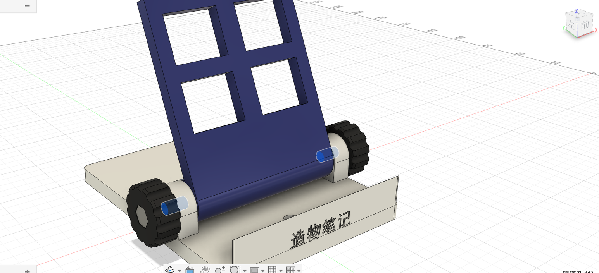
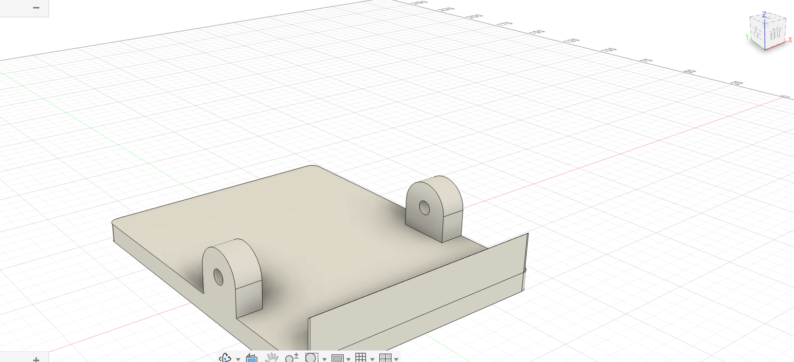
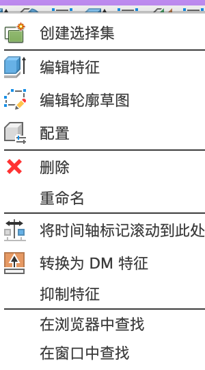

6.2 时间轴全功能
时间轴是设计的“菜谱”。这一页讲时间轴的全部操作：回到过去、在中间插入步骤、调整顺序、抑制、分组，以及右键菜单的每一项。
看懂时间轴#
- 图标的样子表示特征类型（草图、拉伸、圆角、联接……）。
- 图标上方的彩色横条：同一种颜色属于同一个零部件（和浏览器里零部件前面的颜色对应）。
- 最右边的黑色竖条是“时间标记”，表示模型现在算到哪一步。
- 左边的播放按钮：一步一步回放建模过程。
- 鼠标停在图标上：显示特征名，画布里对应的几何高亮。

回到过去#
- 用鼠标按住时间轴最右边的黑色竖条（时间标记），往左拖到想回去的那一步后面松开。后面的步骤变灰，暂时不生效，模型回到当时的样子。
- 这时做的新操作（比如打一个孔）会插在这个位置。
- 做完把标记拖回最右边，后面的步骤会在新模型上重新计算一遍。

右键菜单#

| 选项 | 作用 |
|---|---|
| 创建选择集 | 把这个特征的几何存成一个“选择集”，以后一键选中 |
| 编辑特征 | 打开当时的对话框修改（双击图标也一样） |
| 编辑轮廓草图 | 直接进入这个特征用的草图 |
| 配置 | 让这个特征在不同“配置”里取不同的值（配置 = 同一个设计存几种规格，比如大中小三个尺寸） |
| 删除 / 重命名 | — |
| 将时间轴标记滚动到此处 | 回到这一步之前 |
| 转换为 DM 特征 | 转成“直接建模”特征：形状保留，但不再记得“是怎么做出来的”，改不了当初的尺寸。一般不用 |
| 抑制特征 | 暂时让这一步不生效，图标变灰；再右键「解除抑制」恢复 |
| 在浏览器中查找 / 在窗口中查找 | 定位它对应的对象 |
调整顺序和分组#
- 拖动图标可以改变顺序，但不能拖到它依赖的特征前面（Fusion 会阻止）。
- 按住 ⇧ 选中几个相邻的图标再右键，菜单里有建组的选项：把它们折叠成一个组，时间轴更清爽。